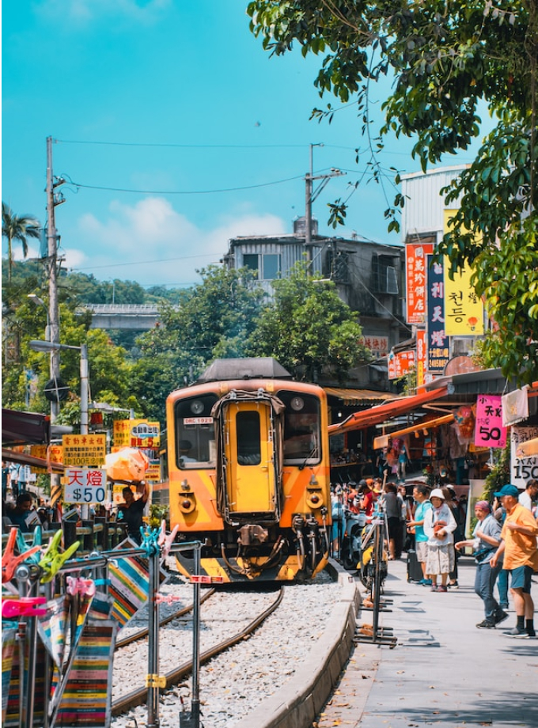
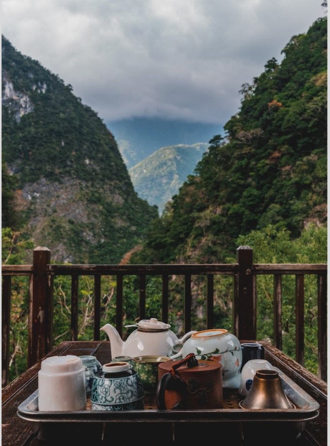
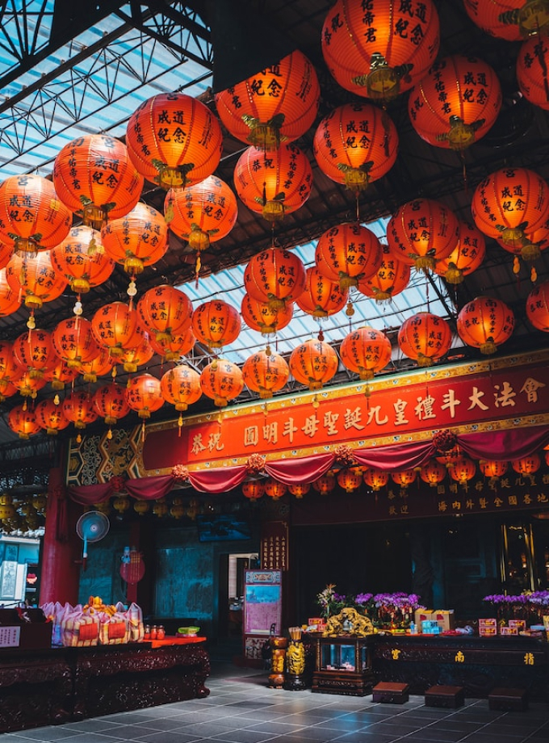
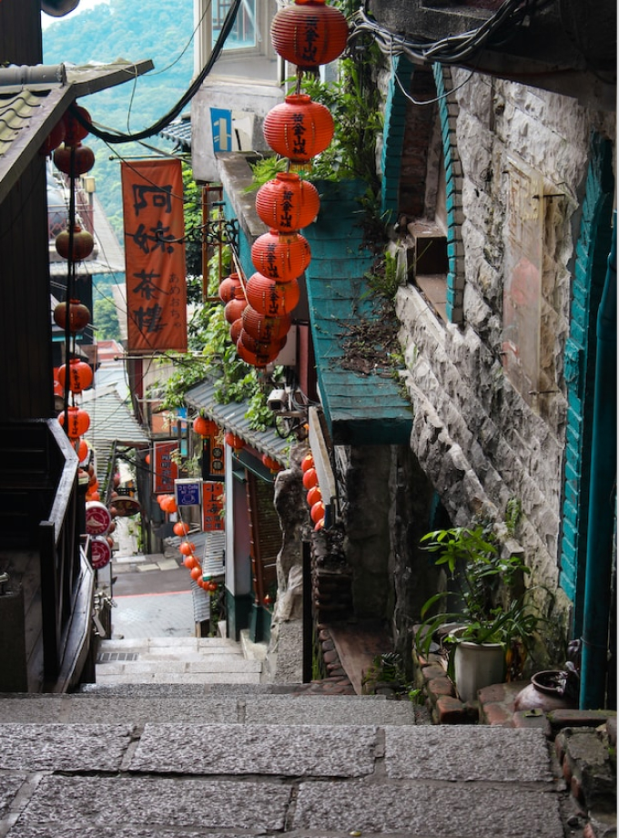
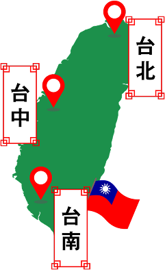
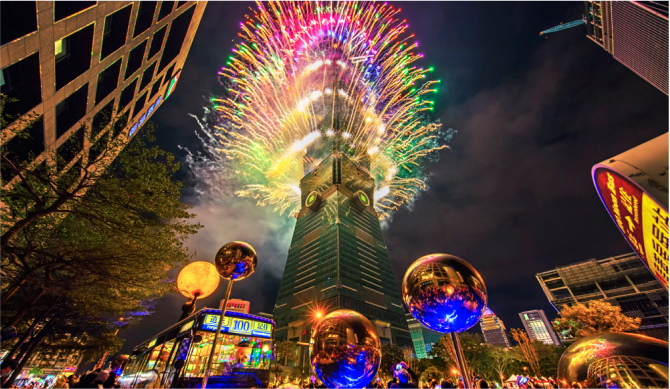

フォルモサは、十六世紀にポルトガル人がエメラルド色の美しい台湾を見つけて発した賛嘆の言葉です。緑にあふれた台湾の美しい風景が、あなたを桃源郷の世界へといざなってくれるでしょう。

Gallery ギャラリー




Travel おすすめスポット
訪れた人々を魅了する「美麗島」台湾。そんな台湾の人気スポットを代表する地を３つのエリアでご紹介します。様々な風景に誰もが魅了されるでしょう。
Event おすすめイベント
台湾ランタンフェスティバル
開催期間
春節 旧暦元日（2月24日～3月2日）
春節の風習として「天燈」と呼ばれる紙製のランタンに無病息災などの祈りを書き込み、火種を用いて熱気球と同じ原理で空に飛ばす儀式です。吉祥や邪気払いの意味があります。
台北最High新年城
カウントダウンパーティー

開催期間
12月31日～1月1日
台北101では毎年、元旦0時から約3分間、ビルを覆いつくすように新年を祝う花火が舞い上がります。世界中から注目されるイベントの一つです。
台湾基本情報
- 国名
- 中華民国・台湾
- 首都
- 台北
- 人口
- 約2,300万人
- 面積
- 約3万6,000km²
- 人種・民族
- 漢民族、先住民
- 宗教
- 仏教、道教、キリスト教、その他
- 言語
- 北京語、台湾語
- 通貨
- 元（ニュー台湾ドル）
- 時差
- 1時間
- 台湾の気候・服装
- 亜熱帯に属し一年を通して温暖な台湾。しかし北回帰線から南は熱帯で熱く、北部は大陸性気候の影響を受けて冷え込むこともあります。地域差を考慮して服装を準備しましょう。
- 台湾の祝祭日
-
- 正月
- 1月1日
- 端午節
- 6月22日
- 春節
- 1月20日～29日
- 中秋節
- 9月29日
- 平和記念日
- 2月28日
- 国慶節
- 10月10日
- 清明節
- 4月5日